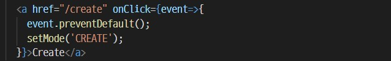
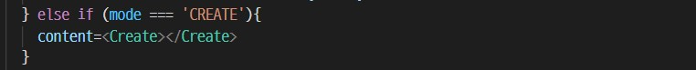
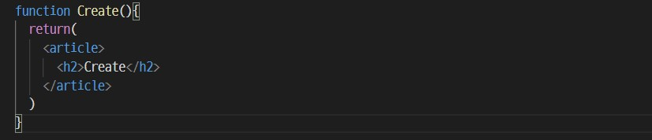
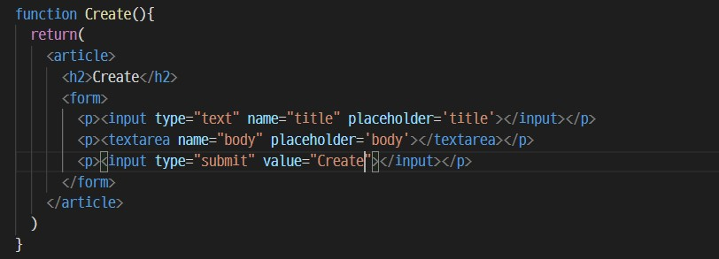
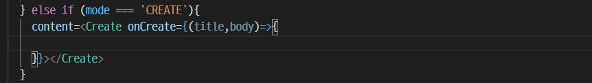
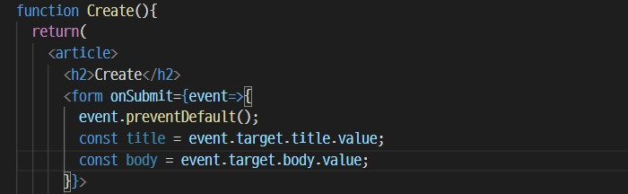
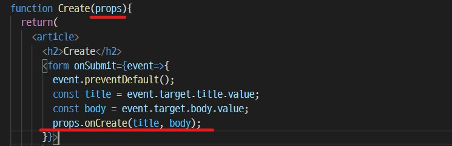

Create 1
2022-04-20
대부분의 애플리케이션은 생성, 읽기, 수정, 삭제라는 이 4가지 기능을 가지고 있다.
리액트에서 글을 생성하고, form을 다루는 법을 알아보자. form에 제목과 본문을 적으면 화면에 그대로 출력하려고 한다.
- create 페이지로 이동하는 링크를 만든다.
-
create 문자열 클릭 시 나타나는 이벤트 함수를 작성한다.
- 
- a 태그의 기본 성격을 제거하기 위해 preventDefault(); 값을 작성하고, mode를 변경 할 setMode를 작성한다.
-
if else 문을 추가하여 mode의 값이 CREATE 일 때 나타날 화면을 설정한다.
- 
- content의 값에 Create라는 컴포넌트를 삽입한다.
-
Create 컴포넌트를 작성한다.
- 
- 여기까지 작성하면 Creat 링크를 클릭했을 때 h2 태그 안에 있는 제목이 나타나게 된다.
- form 태그를 작성한다.
- 
- 위의 코드를 완성하면 아래와 같이 완성이 된다.

-
생성 버튼을 눌렀을 때 후속 작업을 할 수 있는 인터페이스를 만들기 위해 onCreate prop을 생성하고 함수를 작성한다.
- 
-
form 태그에 submit이 실행되면 발생하는 이벤트인 onSubmit을 작성한다.
- 
- submit을 클릭하면 페이지가 reload 되기 때문에 preventDefault();을 작성하고 진행한다.
- form 태그 안 name이 title, body인 태그의 value 값을 얻어야 하므로, 이벤트가 일어나는 form 태그를 target하고 name이 title인 태그를 .title로 가져오고, .value를 뒤에 붙인다.
-
submit 정보를 공급받을 onCreate 속성을 props로 가져오고 해당 함수가 실행되게 한다.
- 